Divided over the Sokovia Accords — government oversight regulations for superheroes — the Avengers break into warring factions. Tony supports accountability after witnessing the destruction caused by Ultron, leading to a personal, shattering battle against Steve Rogers in Siberia when Tony discovers the truth about his parents' murder.
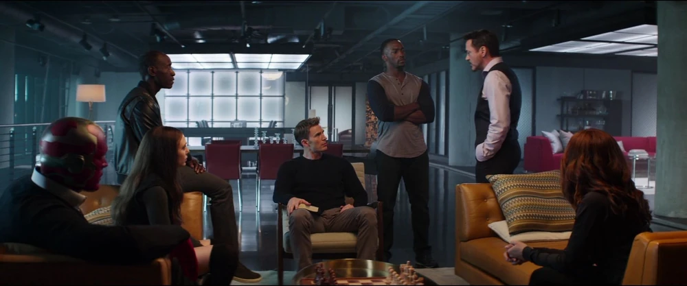
Sokovia Accords Discussion
Secretary Ross presents the Sokovia Accords to the Avengers. Tony Stark supports government oversight, driven by guilt over Sokovia and the loss of lives.
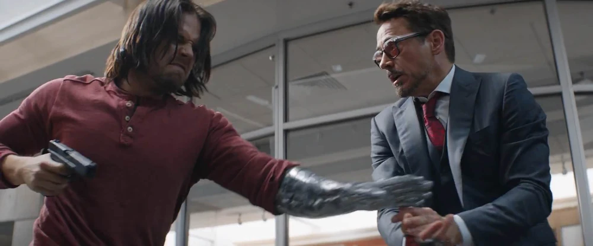
Fighting Bucky in Berlin
When the brainwashed Bucky Barnes escapes custody in Berlin, Tony Stark uses his high-tech watch-glove to block a bullet and fight Bucky hand-to-hand.

Meeting Aunt May in Queens
Tony Stark visits Peter Parker's apartment in Queens, chatting with Aunt May while waiting to recruit the talented teenager for the upcoming conflict.
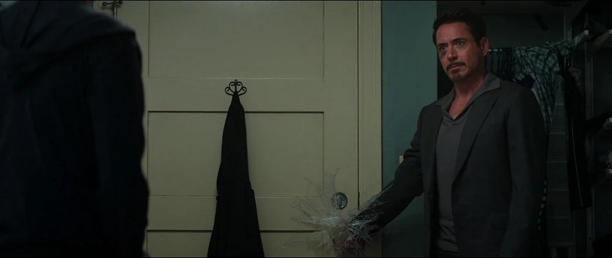
Recruiting Peter Parker
Tony reveals to Peter that he knows he is Spider-Man. Peter attempts to decline, webbing Tony's hand to the doorknob in a humorous show of agility.
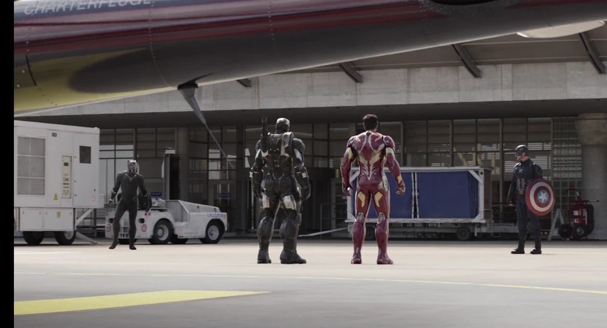
Confrontation in Leipzig
Tony Stark, Rhodey, and T'Challa confront Steve Rogers at the Leipzig airport, pleading with him to surrender before the situation escalates further.
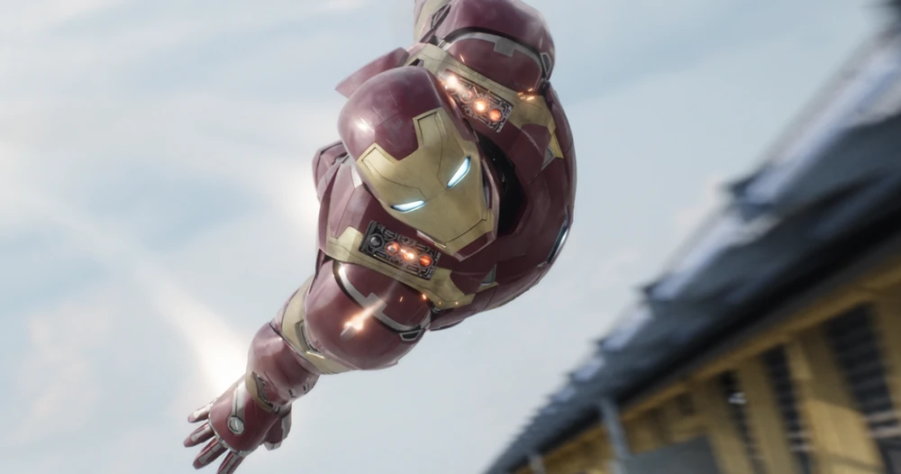
Airport Battle Begins
Spider-Man steals Cap's shield to initiate the clash. Team Iron Man faces off against Team Captain America at Leipzig–Halle Airport.
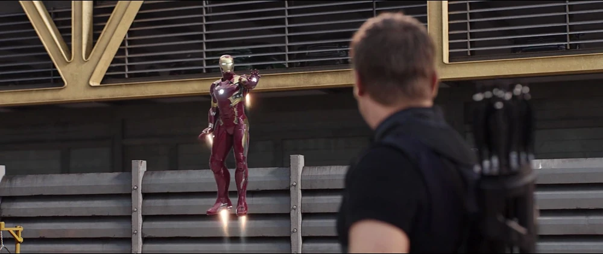
Divided Team Battle
The Avengers engage in a massive team battle, split into factions over their ideological divide, testing their powers against each other.
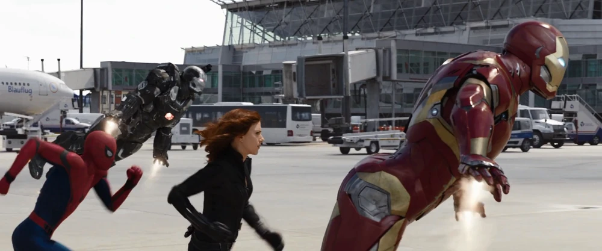
Mark XLVI Helmet Close-Up
Tony Stark's advanced Mark XLVI helmet faceplate slides shut as the high-stakes battle at the Leipzig airport intensifies.
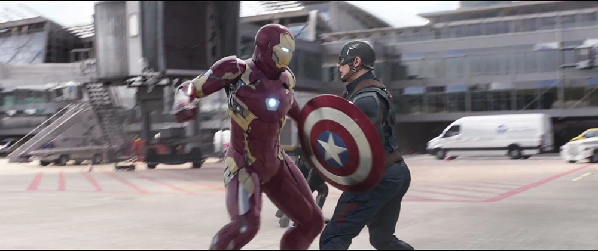
Iron Man vs. Captain America
Tony Stark clashes directly with Steve Rogers during the chaotic airport battle, trying to disable his friend without causing fatal harm.
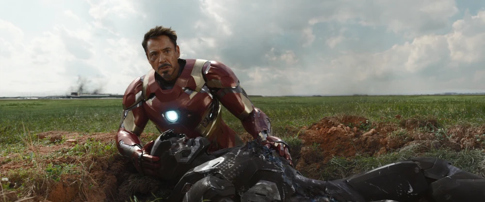
Rhodey's Devastating Fall
After Vision's laser accidentally strikes Rhodey's arc reactor, Tony rushes down to his friend, cradling him as he lies severely injured and paralyzed.
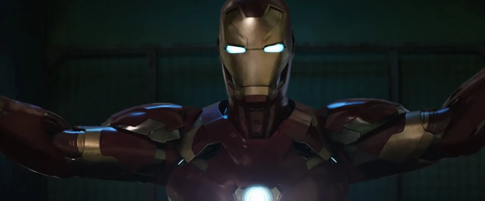
Mark XLVI Airport Scan
A dramatic close-up scan of the Mark XLVI as Tony flies through the terminal, surveying the battlefield and his fractured team.
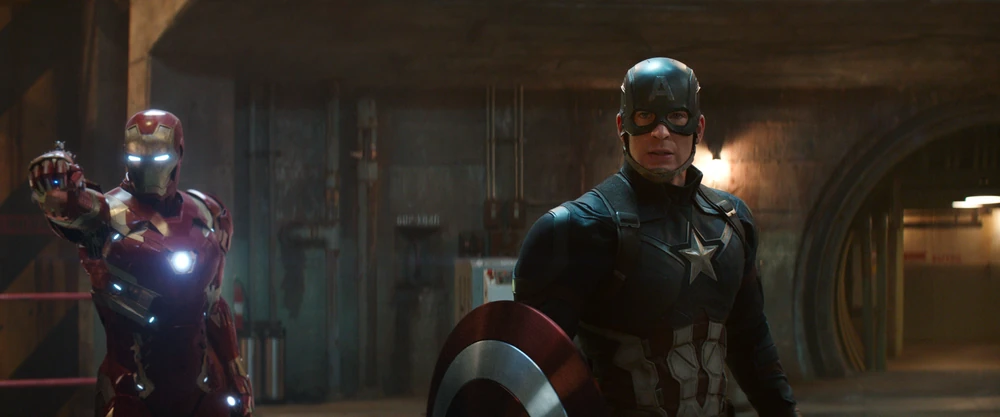
Visiting the Raft Prison
Tony visits the high-security Raft prison to speak with his captured former teammates, disabling the prison surveillance to follow Steve's lead to Siberia.
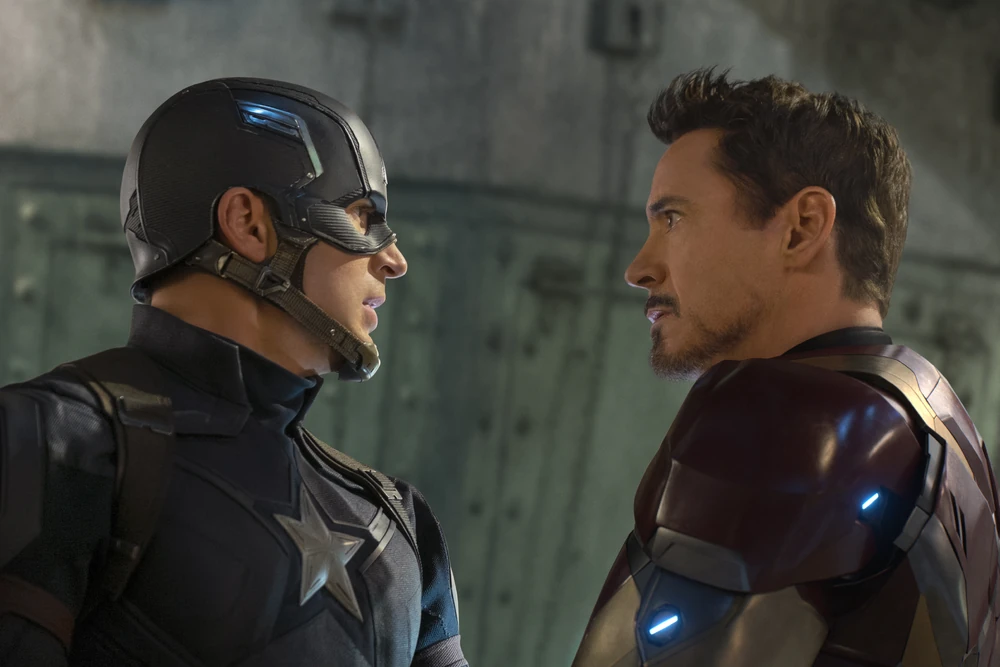
Parental Truth Revealed
In the Siberian silo, Helmut Zemo plays a video showing a brainwashed Bucky Barnes brutally murdering Tony's parents in 1991.

Siberian Bunker Showdown
Blinded by grief and rage, Tony Stark attacks Bucky Barnes, engaging in a brutal two-on-one battle against Steve Rogers and Bucky.
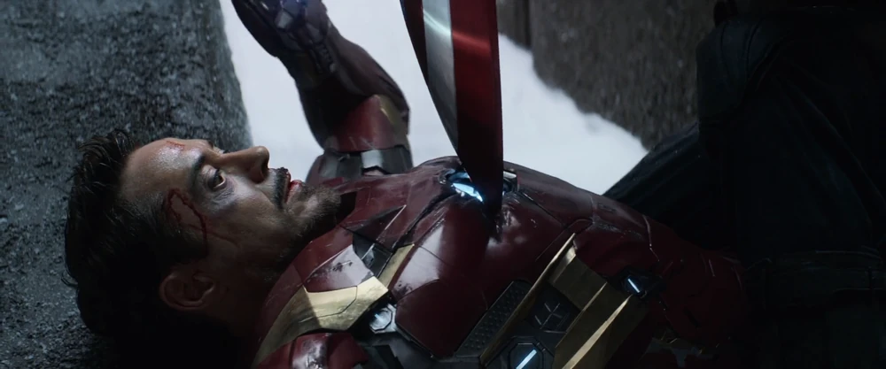
Broken Arc Reactor
Steve Rogers disables the Mark XLVI by slamming his shield into Tony's Arc Reactor. Steve departs with Bucky, dropping his father's shield as they leave.